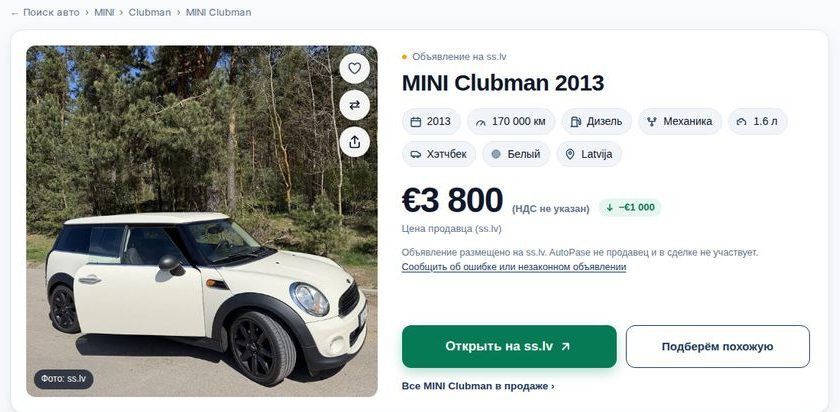
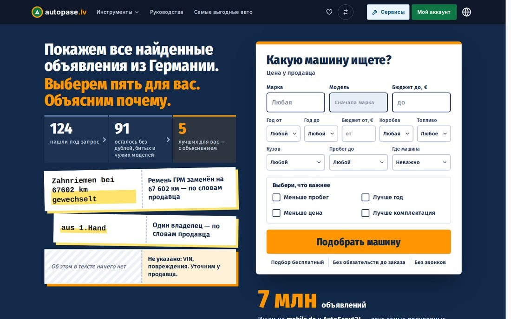
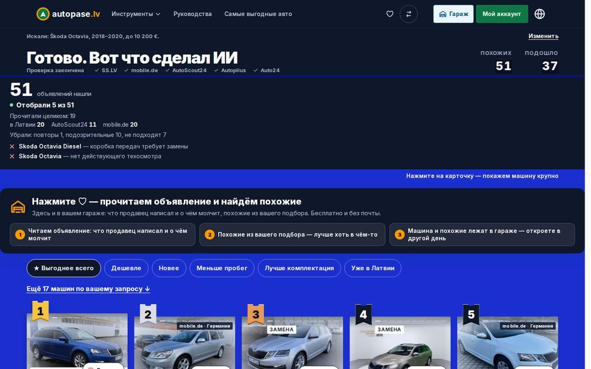
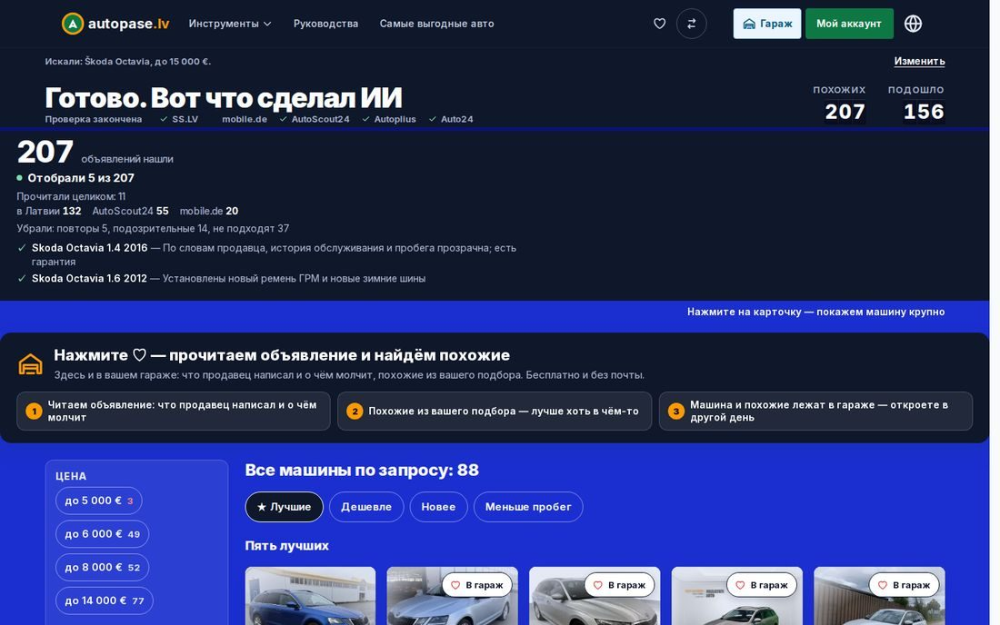
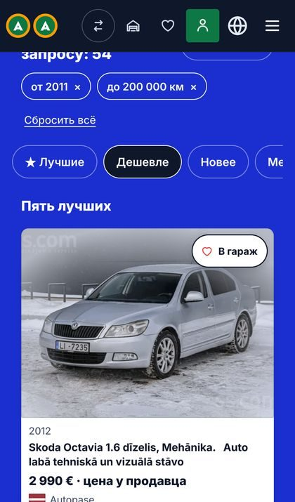
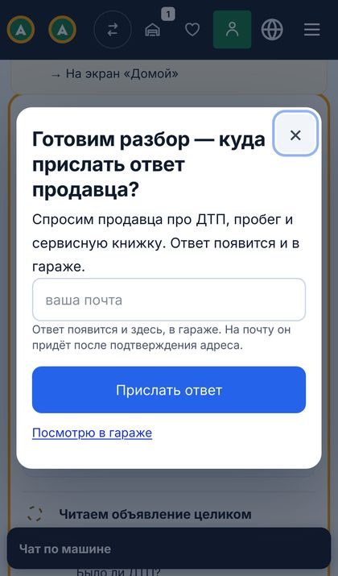
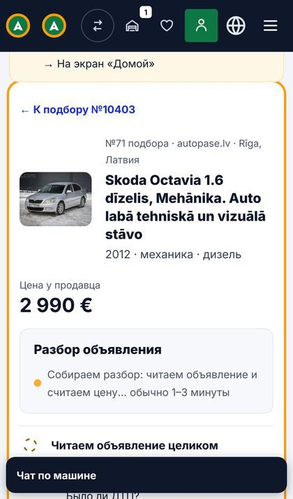

Как сайт работает на 08.11, до новой версии. Главный путь — вниз по центру; после сердечка две ветки: влево — гараж без почты, вправо — почта. Справа — люди, проценты и что чинит новая версия (буквы — части H-012). Для сравнения, у Жени: 446 на главной → 326 подбор → 64 открыли машину → 14 в гараже.
Цвета сайта общие шаги гараж почта выключено или нет число есть не считаем цифры нет
Поиск Google
страницы autopase.lv
не считаем
Реклама Google
пока нет: 0 заходов. Будет — сразу в подбор с моделью
H-003, после новой версии
Страницы машин и моделей: полоса и блок подбора
отсюда пришли 246 из 248весь сайт: 9 830 устройств / 7 дн
Подберём машину из Германии: ИИ выберет 5 лучших для вас
маркамодельгод отгод дотопливокоробкабюджет доНайти за границей

Блок сам вписывает 4–5 условий этой страницы (год ±1, топливо, коробку) и сразу запускает подбор. На странице машины есть ещё блок «Такой же … — найдём в Германии».
Полоса — текст с 07.11 22:12 (снимок страницы сделан раньше, полоса перерисована по сайту). 9 830 — все устройства сайта за неделю, Латвия 4 256 (PATH-KPI, шаг 1).
Лендинг /select
пришли так: 2 из 248

Форма на 11 полей. Сюда почти никто не приходит: в группу Антона идут через блок на страницах.
Подбор: читаем объявления
начали: 270 человек / 7 днЛатвия 155
Первые машины — в середине через 14 секунд, весь подбор — 40 секунд. Пока ищем — экран с ходом поиска.
Выдача: «Готово. Вот что сделал ИИ», пятёрка, «Ещё N»
увидели машины: 248 человекЛатвия 144

Полэкрана — сводка поиска. Ниже «Нажмите ♡ — прочитаем объявление», порядки, пятёрка и список «Ещё N машин». У 17 из 100 в первом подборе меньше пяти машин.
Снимок — живой сайт 07.11. «17 из 100» — все живые сайта, 27.10–05.11 (PATH-KPI, шаг 3а).
Половина h2 (с 07.11 19:12)
7 живых — мало для вывода

Здесь уже есть фильтры с числом машин, условия страницы — метками с крестиком, весь список с порядками.
Машина крупно (карточка)
по группе: не считаемпо сайту: открывают 28 из 100
Кто открыл машину, кладёт в гараж чаще: 10 из 60 против 5 из 154.
Все живые сайта, 06.11 (CONCEPT.md:21; карточка H-002, п. 2). Связь, а не доказанная причина.
♡ В гараж
положили: 19 человек7,7 на 100 увидевшихЛатвия 12

Откуда люди берут первую машину (57 положивших, весь сайт): • из списка «Ещё N» — 22 • с открытой карточки — 20 • прямо из пятёрки — 14
Что будет после нажатия — не сказано. На сердечке «В гараж».
Ушли без гаража: 229 из 248.
Положили — PATH-NUMBERS.md, Н2. Откуда первая машина — und-buyers.md:201 (27.10–05.11). Снимок — телефон, половина h2, 07.11.
Гараж открылся — и сразу окно почты
с 07.11 19:12, обе половины

«Готовим разбор — куда прислать ответ продавца?» Спросим продавца про ДТП, пробег и сервисную книжку.
Две кнопки — две ветки: ◄ «Посмотрю в гараже» или закрыл — влево (оранжевая) ► «Прислать ответ» с почтой — вправо (синяя)
Человек ещё не видел разбора, а у него уже просят почту.
ВЕТКА 1 · ГАРАЖ БЕЗ ПОЧТЫ
ВЕТКА 2 · ПОЧТА
Гараж: разбор объявления и «Спросить продавца»
разбор готов: 19 из 19 человек41 из 51 машины, середина 53 с

Разбор объявления — «обычно 1–3 минуты»: совет, что спросить, чего в объявлении нет.
Чат по машине и три вопроса продавцу: было ли ДТП, подтверждён ли пробег, есть ли сервисная книжка.
«Спросить продавца» жали 10 из 25 положивших (01.11).
Почты нет — звать человека назад можно только уведомлением на телефон.
19 из 19 — PATH-NUMBERS.md, Н2. 41 из 51 машины — PLAN.md, шаг 6 (машины, не люди). 10 из 25 — PATH-KPI, шаг 6.
Почта получена
1 человек из 19 положившихнеделей раньше: 6 из 28
почта получена
Почту дают, когда есть зачем: из спросивших продавца почту дали 7 из 10, из не спросивших — 0 из 15 (01.11).
Дальше — письмо «подтвердите почту», потом письма гаража (ниже).
PATH-NUMBERS.md, Н2 и Н1; 7 из 10 — product-map-01-11, 6-garazh.md:189.
Уведомление на телефон
предложили 36 · включили 4 · отправлено 1
За всё время. Человек без почты почти не возвращается: позвать его нечем.
product-map-01-11, 7-vozvrat.md:19.
Письма гаража
открыли / нажали: не считаем
«Продавец ответил», «подешевела», «продана», «нашли лучше». Ключ из письма открывает гараж на любом устройстве.
tech.md, шаг 9. Из получивших первое письмо про машину 5 из 12 открыли гараж за 72 часа (7-vozvrat.md:15).
Детальный отчёт 2,90 € — выключен
оплат: 0включает только Антон
Строка собрана в гараже половины h2 и не видна людям.
Новый подбор
Сменили условия после первой выдачи: 28 из 100. Они кладут чаще: 16 против 5 на 100.
und-buyers.md, п. 3 (все живые сайта).
Вернулись в другой день
9 человек из 248 увидевших — 3,6 на 100 (Латвия 6).
PATH-NUMBERS.md, Н2; последним дням недели вернуться некогда — число занижено.
Потеря
Ушли без гаража: 229 из 248. Почему — спрашиваем уходящего с 07.11.
ответы: не считали
Приложение
Цифры за 7 дней (группа Антона, живые люди, 31.10–06.11)
шаг
все · Латвия
Весь сайт: устройств с просмотром страницы
9 830 · 4 256
Начали подбор (людей)
270 · 155
Увидели машины
248 · 144
из них пришли блоком со страниц / через форму
246 / 2
Открыли машину крупно
не считаем
Положили в гараж (на 100 увидевших)
19 (7,7) · 12 (8,3)
Разбор готов
19 · 12
Дали почту
1 · 1
Детальный отчёт 2,90 € оплачен
0 (выключен)
Вернулись в другой день
9 · 6
Неделей раньше (24–30.10): положили / почта
28 из 315 (8,9) / 6
Половина h2 (с 07.11 19:12 до утра 08.11)
7 живых — мало
Неделя на день раньше, чем у карты Жени (01–07.11): 07.11 в 19:12 в группе Антона началась проверка новой половины, поэтому взята последняя полная неделя до неё. Внутри недели, 05.11, на всём пути стала только цена у продавца.
Источники: PATH-NUMBERS.md (окно strategy, 07.11; база стенда и счётчик посещений, только чтение); PATH-KPI.md; CONCEPT.md; und-buyers.md; product-map-01-11/facts. Снимки — живой сайт 07.11 (journey-0811), полоса на странице машины перерисована по тексту сайта с 07.11 22:12.
План правок — по очереди
Пункты ①–③ и ⑤ — одна новая версия (H-012): её строит основное окно, включается одной минутой, с неё счёт заново. Пункт ④ — после почты.
1
Выдача → гараж: главный провалВДБ Что сделать: сверху пять разных с «чем лучше, чем хуже»; «♡ Бесплатный разбор» и обещание; одна полоса хода вместо сводки. Фильтры и весь список уже в h2. На каком шаге: выдача · машина крупно · сердечко. Только половина h2. Как поймём: положили на 100 увидевших: h2 против остального garage, порог 16+, около 15 дней с включения.
2
ВходА Что сделать: лендинг «модель и бюджет» в h2; реклама Google (H-003) — после включения новой версии, сразу в подбор с моделью. На каком шаге: страницы сайта · лендинг. Как поймём: начали подбор на 100 пришедших; люди рекламы — отдельной строкой, в главное число не входят.
3
ПочтаЗЕЖ Что сделать: «Спросим продавца — бесплатно» с полем почты внутри разбора вместо окна; гараж открыт на машине; разбор крупно. На каком шаге: гараж. Обе половины. Как поймём: почта на 100 положивших: сейчас 5, цель 30.
4
Возврат Что сделать: нового не строим: письма есть, ждут почты. На каком шаге: письма · уведомления. Как поймём: вернулись в другой день на 100 увидевших.
5
Детальный отчёт 2,90 €И Что сделать: место собрано и выключено. На каком шаге: гараж. Как поймём: включает только Антон; после включения — оплат на 100 положивших.
сразу в подбор
блок сам запускает подбор
«Подобрать машину»
половина группы
нажал на машину
♡ прямо из пятёрки или списка
ушли без гаража: 229
◄ «Посмотрю в гараже» — ветка 1
«Прислать ответ» — ветка 2 ►
спросил продавца — дал почту
уведомление позвало
письмо позвало
снова в подбор
ВОРОНКА В ЛЮДЯХ И ЧТО ЧИНИТ НОВАЯ ВЕРСИЯ Крупно — люди и % от начала (270 начавших подбор = 100 %), мелко — от предыдущего шага. Буквы А…К — части новой версии (карточка H-012); серая буква — уже на сайте в половине h2. Кружок ①–⑤ — очередь.
Вход: страницы сайта → подбор
2
270человек начали подбор100 %
начало воронки · Латвия 155
Видим: 246 из 248 приходят блоком со страниц; блок сам ставит 4–5 условий, и выдача узкая. Через форму пришли 2. Рекламы нет.
Делаем в новой версии:
Алендинг «модель и бюджет» в половине h2: «Ищем вашу модель у дилеров Германии за минуту», бюджет одним рядом «до 5 · 10 · 15 · 20 · 30 тыс. €»
Гусловия страницы — метками с крестиком, поиск по модели и бюджету
Реклама H-003 — после включения новой версии: сразу в подбор с моделью
Поймём: начали подбор на 100 пришедших (весь сайт, Латвия: 6,5); люди рекламы — отдельной строкой.
Подбор → выдача
1
248увидели машины92 %
92 % от начавших · Латвия 144
Видим: шаг держит. Но полэкрана выдачи — сводка «Готово. Вот что сделал ИИ», до машин надо листать.
Делаем в новой версии:
Бодна полоса хода вместо сводки: «Читаем объявления дилеров», «нашли N · убрали M»
Гчестный ответ, когда машин мало: что мешает и сколько станет
Поймём: сторож: увидели машины — не ниже остального garage больше чем на 5 пунктов.
Выдача → гараж: ГЛАВНЫЙ ПРОВАЛ
1
19положили в гараж7,0 %
7,7 на 100 увидевших · Латвия 12 (8,3 на 100) · цель Антона — 60
Видим: 229 из 248 уходят без гаража. 72 из 100 не открывают ни одной машины. В пятёрке почти одинаковые машины, а первую машину чаще берут из списка «Ещё N» (22 из 57), чем из пятёрки (14).
Делаем в новой версии:
Всверху пять разных: наш выбор, дешевле, больше оснащения, меньше пробег, другая модель — у каждой «чем лучше, чем хуже»
Дна сердечке «♡ Бесплатный разбор» и обещание над пятёркой
Гфильтры с числом машин и весь список с порядками
Поймём: положили на 100 увидевших: в h2 вдвое больше остального garage (16+). Нужно 258 человек на половину — около 15 дней с включения.
Машина крупно
1
по группе: не считаем · по сайту 28 из 100
Видим: кто открыл машину, кладёт в гараж чаще (10 из 60 против 5 из 154).
Делаем в новой версии:
Ву каждой из пяти строка «чем лучше, чем хуже» — повод открыть
в замере: какую роль из пяти открыли и положили
Поймём: машин открыто на человека больше, чем в остальном garage (ранний признак).
Сердечко: что будет после — не сказано
1
ответ «Не понял, что дальше» — спрашиваем с 07.11
Видим: на сердечке «В гараж», а что человек за это получит — нигде не сказано.
Делаем в новой версии:
Д«♡ Бесплатный разбор» вместо «В гараж» и обещание над пятёркой
Епосле нажатия гараж открыт на этой машине: «В гараже. Разбираем объявление — около минуты.»
Поймём: реже ответ уходящего «Не понял, что дальше».
Окно почты сразу после сердечка
3
1дал почту0,4 %
1 из 19 положивших · неделей раньше 6 из 28
Видим: почту просят раньше, чем человек увидел разбор. Из спросивших продавца почту дали 7 из 10, из не спросивших — 0 из 15.
Делаем в новой версии:
Зокна сразу после сердечка нет; «Спросим продавца — бесплатно» и поле почты — внутри разбора
Ерядом с машиной — остальные из пятёрки с «+ в гараж»
Поймём: почта на 100 положивших (сейчас 5, цель 30). Делается в обеих половинах.
Разбор в гараже
3
19с готовым разбором7,0 %
у всех 19 положивших · 41 из 51 машины, середина 53 с
Видим: разбор работает и честный: на 03.11 совет «с условием» у 44 из 62 разборов, «не брать» — у 17. Но он тонет между чатом и вопросами.
Делаем в новой версии:
Жсовет крупно, «Что спросить у продавца», «Слабые места этой модели», «Чего в объявлении нет — спросим у продавца»
Кв конце гаража тихая строка «Если решите везти машину в Латвию, доставку посчитаем отдельно.»
Поймём: «Спросить продавца» жмут 40+ из 100 положивших (01.11 — 10 из 25).
Возврат
4
9вернулись в другой день3,3 %
3,6 на 100 увидевших · Латвия 6
Видим: письма гаража есть, но приходят только давшим почту; уведомление на телефон за всё время отправлено 1 раз.
Делаем в новой версии:
нового не строим: возврат упирается в почту — сначала З
Поймём: вернулись в другой день на 100 увидевших.
Детальный отчёт 2,90 €
5
0оплат0 %
строка выключена
Видим: отчёт — третий шаг, после бесплатного разбора. В группе Антона оплата выключена.
Делаем в новой версии:
Иместо под бесплатным разбором собрано: «Детальный отчёт — 2,90 €… Обычно за 24 часа в рабочие дни.» Включает только Антон
Поймём: после включения — оплат на 100 положивших.
Люди — живые места группы garage за 31.10–06.11 по Риге (окно strategy, PATH-NUMBERS.md): браузер с первым подбором в неделе, без проб, команды и браузеров без следа в счётчике посещений. Числа «по сайту» — все живые сайта, подписаны у шага. 41 из 51 и 44 из 62 — машины и разборы, а не люди. Новых запросов не делали.